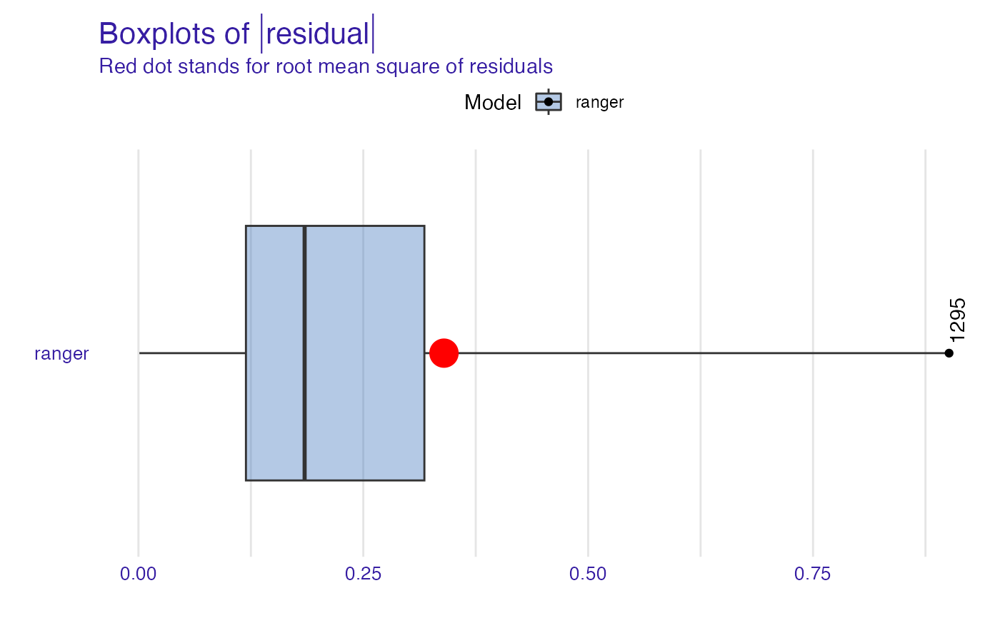
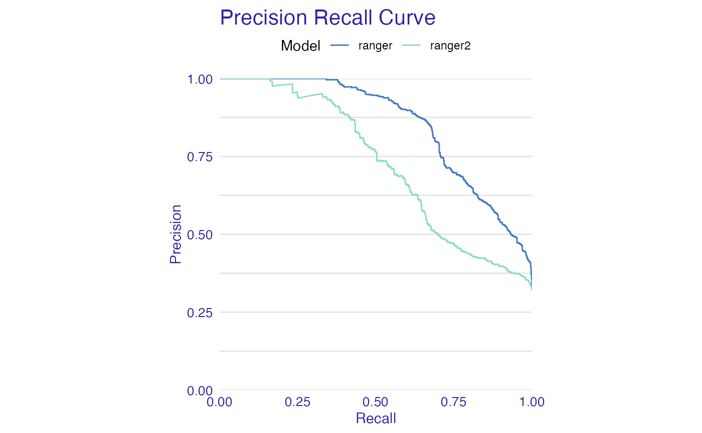
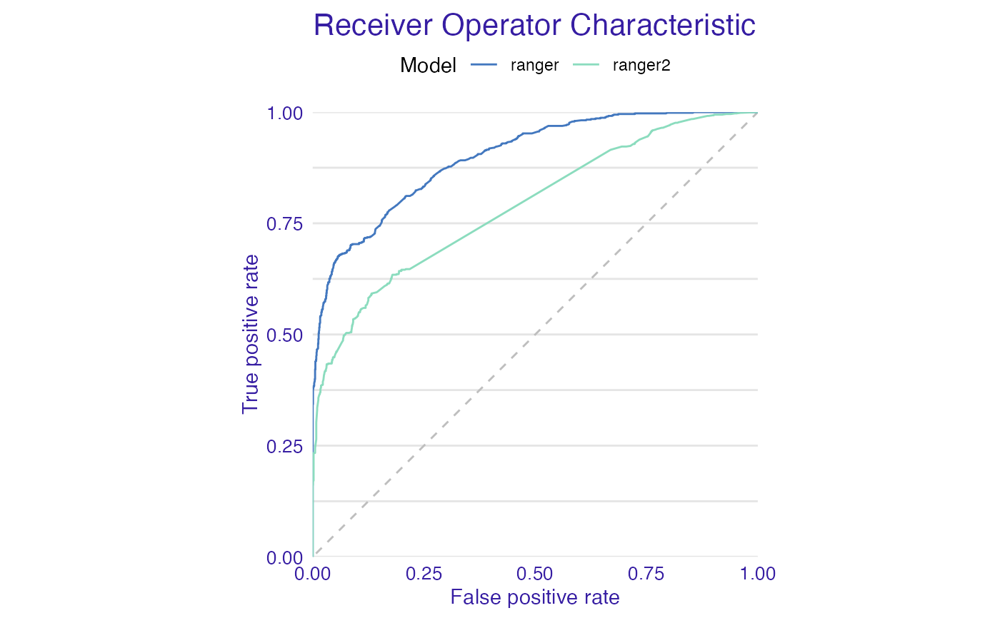
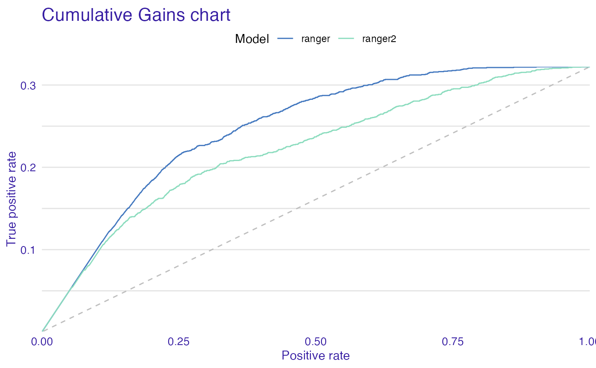
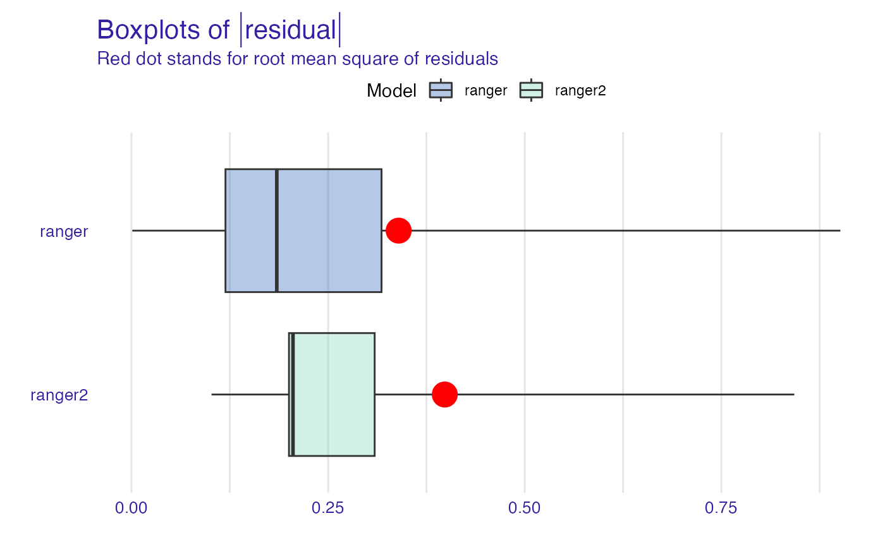
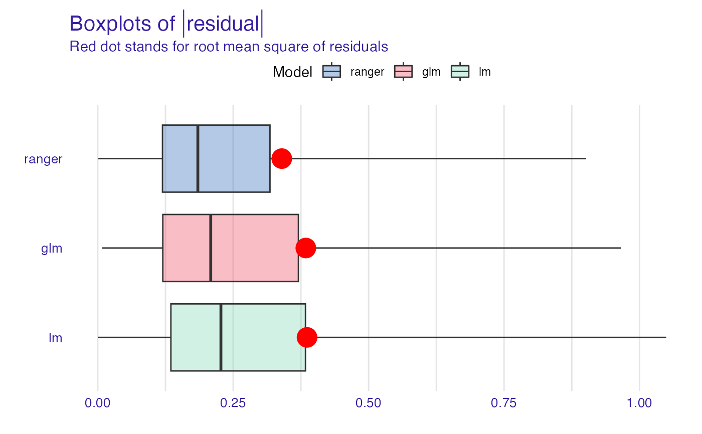

R/plot_model_performance.R
plot.model_performance.RdPlot Dataset Level Model Performance Explanations
# S3 method for model_performance plot( x, ..., geom = "ecdf", show_outliers = 0, ptlabel = "name", lossFunction = loss_function, loss_function = function(x) sqrt(mean(x^2)) )
| x | a model to be explained, preprocessed by the |
|---|---|
| ... | other parameters |
| geom | either |
| show_outliers | number of largest residuals to be presented (only when geom = boxplot). |
| ptlabel | either |
| lossFunction | alias for |
| loss_function | function that calculates the loss for a model based on model residuals. By default it's the root mean square. NOTE that this argument was called |
An object of the class model_performance.
# \donttest{ library("ranger") titanic_ranger_model <- ranger(survived~., data = titanic_imputed, num.trees = 50, probability = TRUE) explainer_ranger <- explain(titanic_ranger_model, data = titanic_imputed[,-8], y = titanic_imputed$survived)#> Preparation of a new explainer is initiated #> -> model label : ranger ( default ) #> -> data : 2207 rows 7 cols #> -> target variable : 2207 values #> -> predict function : yhat.ranger will be used ( default ) #> -> predicted values : numerical, min = 0.0218781 , mean = 0.3234796 , max = 0.9969801 #> -> model_info : package ranger , ver. 0.12.1 , task classification ( default ) #> -> residual function : difference between y and yhat ( default ) #> -> residuals : numerical, min = -0.8033318 , mean = -0.00132286 , max = 0.9048183 #> A new explainer has been created!titanic_ranger_model2 <- ranger(survived~gender + fare, data = titanic_imputed, num.trees = 50, probability = TRUE) explainer_ranger2 <- explain(titanic_ranger_model2, data = titanic_imputed[,-8], y = titanic_imputed$survived, label = "ranger2")#> Preparation of a new explainer is initiated #> -> model label : ranger2 #> -> data : 2207 rows 7 cols #> -> target variable : 2207 values #> -> predict function : yhat.ranger will be used ( default ) #> -> predicted values : numerical, min = 0.1549831 , mean = 0.3236262 , max = 0.8695468 #> -> model_info : package ranger , ver. 0.12.1 , task classification ( default ) #> -> residual function : difference between y and yhat ( default ) #> -> residuals : numerical, min = -0.8373586 , mean = -0.001469422 , max = 0.8450169 #> A new explainer has been created!titanic_glm_model <- glm(survived~., data = titanic_imputed, family = "binomial") explainer_glm <- explain(titanic_glm_model, data = titanic_imputed[,-8], y = titanic_imputed$survived, label = "glm", predict_function = function(m,x) predict.glm(m,x,type = "response"))#> Preparation of a new explainer is initiated #> -> model label : glm #> -> data : 2207 rows 7 cols #> -> target variable : 2207 values #> -> predict function : function(m, x) predict.glm(m, x, type = "response") #> -> predicted values : numerical, min = 0.008128381 , mean = 0.3221568 , max = 0.9731431 #> -> model_info : package stats , ver. 4.0.2 , task classification ( default ) #> -> residual function : difference between y and yhat ( default ) #> -> residuals : numerical, min = -0.9628583 , mean = -2.569729e-10 , max = 0.9663346 #> A new explainer has been created!titanic_lm_model <- lm(survived~., data = titanic_imputed) explainer_lm <- explain(titanic_lm_model, data = titanic_imputed[,-8], y = titanic_imputed$survived, label = "lm")#> Preparation of a new explainer is initiated #> -> model label : lm #> -> data : 2207 rows 7 cols #> -> target variable : 2207 values #> -> predict function : yhat.lm will be used ( default ) #> -> predicted values : numerical, min = -0.234433 , mean = 0.3221568 , max = 1.091438 #> -> model_info : package stats , ver. 4.0.2 , task regression ( default ) #> -> residual function : difference between y and yhat ( default ) #> -> residuals : numerical, min = -1.045905 , mean = 1.291322e-14 , max = 1.049392 #> A new explainer has been created!# }